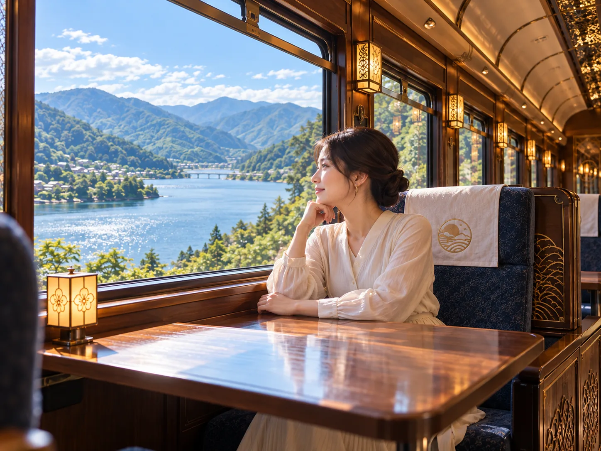
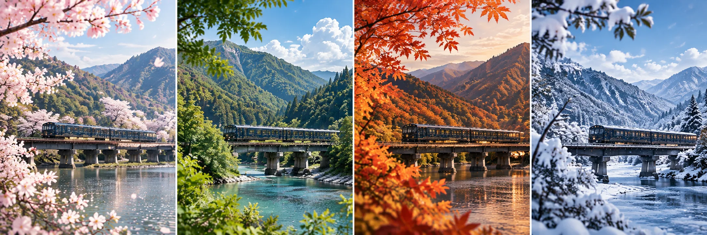

01 / VIEW
車窓を眺める
大きな窓から、山々や水辺、渓谷の風景をゆったりとお楽しみいただけます。
ABOUT
景色と土地の恵みをゆっくり味わう、心ほどける列車の旅。

CONCEPT
凪燈ものがたりは、山あいから湖畔、渓谷へと続く風景を楽しむ観光列車です。
窓の向こうに広がる四季の色、土地の素材を生かした味わい、穏やかな車内の時間。目的地だけではなく、そこへ向かう道のりまで大切にお届けします。
EXPERIENCE
01 / VIEW
大きな窓から、山々や水辺、渓谷の風景をゆったりとお楽しみいただけます。
02 / TASTE
沿線の季節を感じる味わいを、移りゆく景色とともにお届けします。
03 / RELAX
落ち着いた車内で、会話や読書を楽しむ穏やかなひとときをお過ごしください。
SEASONS
同じ旅路にも、季節ごとの表情があります。光と色の変化を感じながら、あなただけの一日を見つけてください。
